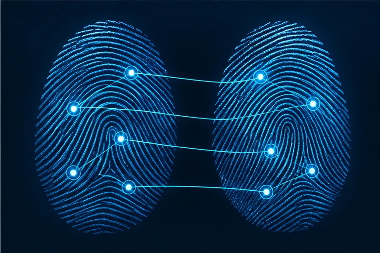

QUESTIONS & ANSWERS
Short answers to the questions most people never think to ask about fingerprint recognition.
THE CORE IDEA
Most of the time, it is not remembering a photo of your whole finger. It compares feature templates and links matches to records.

Alex enrolls a fingerprint first. The system saves a feature template alongside Alex's ID. A later scan that matches that template points to the saved ID.
No. No names are hidden inside the ridge lines. The name comes from the database record attached to the enrolled template.
Many systems store a derived feature template, but storage methods vary. Some also store images or other representations.
A new scan is never identical: finger angle, contact pressure, dirt, moisture and sensor noise can change detected features.
Yes, biometric systems have nonzero false acceptance and false rejection rates. Stricter thresholds generally reduce some false accepts but may cause more legitimate users to be rejected.
Templates are designed for matching, not viewing, but they should still be protected: some forms of biometric templates can leak sensitive information.
No. The interactive journey uses imaginary fingerprint feature points only. There is no camera, fingerprint reader connection, or biometric upload.
Enrollment is the first setup. The device captures a fingerprint, extracts features and saves a reference template linked to an ID.
A minutia is a local ridge detail, such as where a ridge ends or divides into two branches. Position, orientation and type help matching.
No. Capacitive readers sense electrical differences, optical readers use light, and ultrasonic readers use reflected sound.
Verification checks one claimed identity (1:1). Identification searches among multiple enrolled templates (1:N).
Yes. Water, dirt, pressure and placement can hide ridge details or add noise, so some scans are rejected.
It is the similarity level required to accept a match. Raising it can reduce false acceptance but may reject more genuine users.
The device may request another scan or offer a different authentication method. Real implementations need secure fallback procedures.
A fingerprint is a long-term physical trait. Templates and records need appropriate security, consent and retention limits.
CHECK YOUR UNDERSTANDING
What does the device compare when a person touches the scanner again?